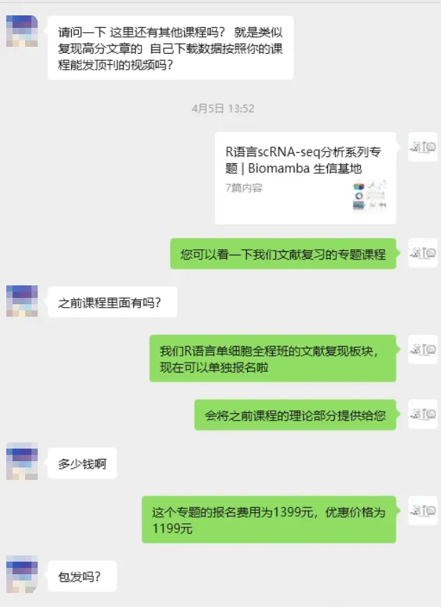
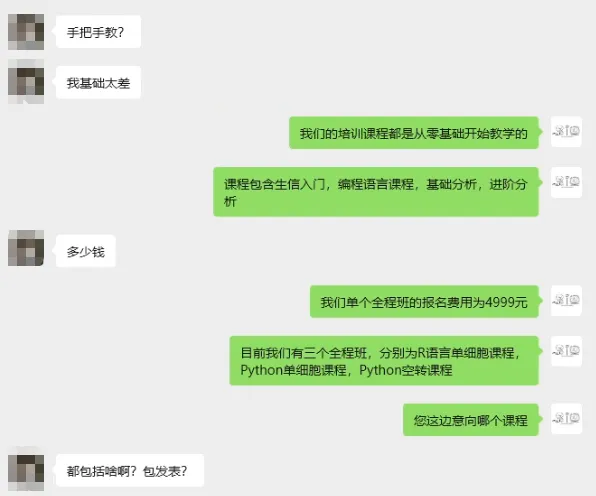
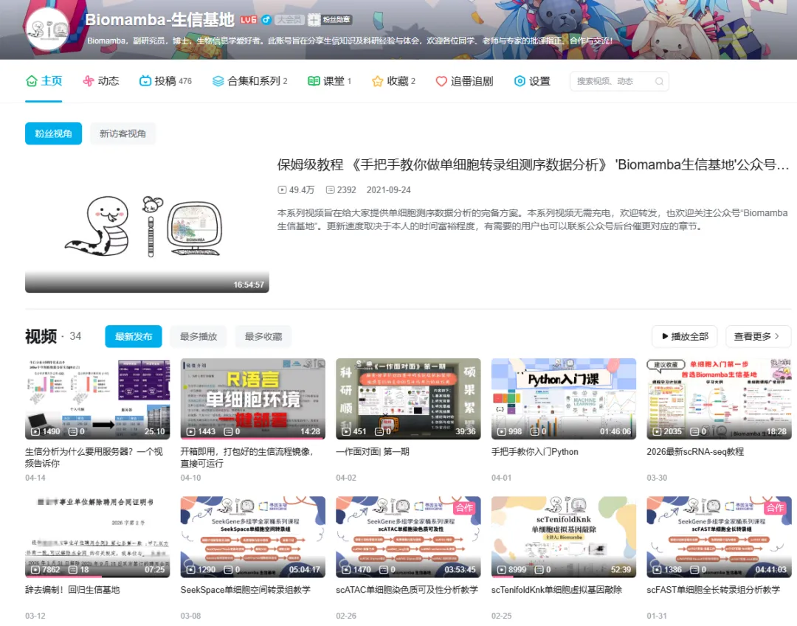
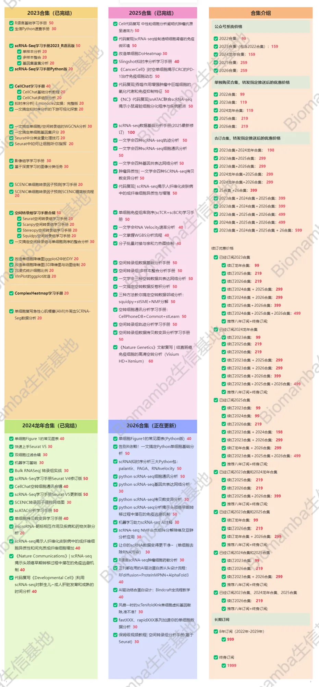

有些需求，只有骗子能满足
原文：https://mp.weixin.qq.com/s?__biz=MzAwMzIzOTk5OQ==&mid=2247537738&idx=1&sn=7257e7dcecbe677e12349ac2fea8bb26&chksm=9b3c2d1aac4ba40c033d2e80eca8d1259ef4f9d0fae3427d09e2f43706f60e46df9df1eb8419#rd 合集：漫谈胡侃
继上次还有人买卖文章？和代发论文被骗7.5w？之后，还有人粉丝问我们的课程包不包发文章。我只能说：有些需求，只有骗子才能满足 。我们几千￥的课程，给大家提供两个月的生信教学，送三个月256GB单细胞专属服务器，还要包你发文章，ber，这对吗。别报有侥幸心理，先不说价格高低，任何机构如果真有 “包发文章” 的正规渠道和通天能力，他们为什么不自己读研读博当硕导博导，反而要卖文章给你呢？“包发文章” 这种天上掉馅饼的承诺，只有骗子能给你拍胸脯保证；他们是在利用大家急着毕业、急着出成果的焦虑，把你往坑里带。所以在此也郑重提醒各位粉丝不要上当受骗，世界上哪有什么捷径，美好的愿望只有骗子能满足
。我们几千￥的课程，给大家提供两个月的生信教学，送三个月256GB单细胞专属服务器，还要包你发文章，ber，这对吗。别报有侥幸心理，先不说价格高低，任何机构如果真有 “包发文章” 的正规渠道和通天能力，他们为什么不自己读研读博当硕导博导，反而要卖文章给你呢？“包发文章” 这种天上掉馅饼的承诺，只有骗子能给你拍胸脯保证；他们是在利用大家急着毕业、急着出成果的焦虑，把你往坑里带。所以在此也郑重提醒各位粉丝不要上当受骗，世界上哪有什么捷径，美好的愿望只有骗子能满足 。真正的课程只能教你方法、教你流程、教你避坑。还是跟Biomamba一起学生信吧！咱有正经博士学位、副研究员聘文及论文发表经验：为什么我们敢开放终身订阅，学技能永远比买文章收获大，而且更加踏实！最近我们也有粉丝庆典，可以关注下：坏消息，五一结束了；好消息，生信基地破8万粉丝啦~来抽奖
。真正的课程只能教你方法、教你流程、教你避坑。还是跟Biomamba一起学生信吧！咱有正经博士学位、副研究员聘文及论文发表经验：为什么我们敢开放终身订阅，学技能永远比买文章收获大，而且更加踏实！最近我们也有粉丝庆典，可以关注下：坏消息，五一结束了；好消息，生信基地破8万粉丝啦~来抽奖



Biomamba生信基地

 Biomamba生信基地2020年创建，一直以来的初衷就是帮大家降低生信学习门槛——为大家整理系统且详实的干货内容，省去东搜西找的麻烦，最大程度帮大家节省宝贵的时间成本。我们用心打磨的每一份内容，都值得被更多人看见。现目前我们公众号大多数推文和视频是免费的，相信足够你完成很多常见生信流程的学习。我们的B站也有很多手把手的生信教学：
Biomamba生信基地2020年创建，一直以来的初衷就是帮大家降低生信学习门槛——为大家整理系统且详实的干货内容，省去东搜西找的麻烦，最大程度帮大家节省宝贵的时间成本。我们用心打磨的每一份内容，都值得被更多人看见。现目前我们公众号大多数推文和视频是免费的，相信足够你完成很多常见生信流程的学习。我们的B站也有很多手把手的生信教学：
https://space.bilibili.com/484326544

平台当然也有付费板块，大家按需下单就好：培训课程、订阅资料。培训课程实打实的定价，不搞虚的。除配套的学习手册、代码脚本、测试文件与专项练习题外，还提供三年内课程答疑、直播复听，永久回放；同时配备开箱即用的分析环境，三个月SHPC共享特惠版服务器使用权限。我们甚至可以出了先学习、后补票的支持政策，不设过高门槛，以学习效果为先，让每一位有需求、肯努力的伙伴都能无压力接触我们优质生信课程。
订阅资料同样干货满满，通过完成简单任务可免费领取。订阅教程一般都有配套视频和注释，教程也都是编译好的html文件方便大家学习(这意味着我的代码在我手里是可以保证顺利运行)，因此来我这学习的同学也别要求我提供答疑服务(一两百块块钱指望我一对一给你辅导出一篇SCI出来显然不现实)。当然我是给大家组建了免费交流群的，有空的时候我也会在群里答疑，欢迎大家一起讨论：永久免费的千人生信、科研交流群。大家确实有需要再订阅，非必要不订阅。
—Biomamba

培训课程
我们的培训课程主要有：生信小白入门课、R语言入门课、Python入门课、R语言scRNA-seq基础课、R语言scRNA-seq小白全程班、Python scRNA-seq全程班、Python空间转录组全程班。这些课程均有回放，可联系客服[Biomamba_zhushou]领取资料并进群，另外还有老师答疑解惑。
Biomamba 生信基地的培训课程
入门及编程语言
全程班
三大全程班课程内容

我们后面将会举办更多的课程，大家可以持续关注我们~
订阅资料

经常有用户想要提前订阅资料，看来是真爱粉无疑了。既然氛围都到这了，我们就开放终身订阅吧。终身订阅用户可以在获得我们未来每年更新合辑的所有资料，不要担心我们不更新，生信基地还有37年的产权，欢迎随时来看看(南京市江宁区，详询客服微信)。大家只要考虑自己会不会一直学习生信。
目前已有的五个合集总价为935￥（年均187￥，共54个万字以上教程，平均一篇才13￥），1999￥（按四十年算，年均50￥，预计单篇价格低于5￥）即可获得Biomamba生信基地合集终身订阅权限(暂定价格，随着资料增多、通货膨胀，随时涨价)，比小学生的教辅便宜多了。生信基地的任何业务均支持对公，希望加入终身订阅计划的小伙伴可以尽早联系客服微信[Biomamba_zhushou]。
2026订阅合辑
风靡一时的scTenifoldKnk单细胞虚拟基因敲除,准不准?
scRNA拟时序分析三大Python包：palantir、PAGA、RNAvelocity
正刊都在用的AI驱动蛋白质从头设计流程：RFdiffusion+ProteinMPNN+AlphaFold3
转录因子、基因共表达网络分析手册：pySCENIC在脑、黑色素瘤中的应用
持续更新中~
向下滑动查看更多
2025订阅合辑
《Cell》复现|中性粒细胞scRNA-seq图谱阐明抗肿瘤抗原呈递效力
《Cancer Cell》|时空单细胞揭示CRC的PD-1治疗免疫细胞动态
代码复现|吞噬作用增强肿瘤中巨噬细胞的氧化代谢和免疫抑制特征
肿瘤异质性分析必备| 一文学会四种scRNA-seq拷贝数变异分析
代码复现| scRNA-seq揭示人纤维化皮肤病中的成纤维细胞异质性与增殖
《NC》代码复现|snATAC联合scRNA-seq揭示小鼠肾脏细胞分化程序与疾病靶点
三种方法教你搞定空转数据邻域分析：squidpy+stSME+NMF分解
空转细胞通讯分析学习手册：CellPhoneDB+Commot+stLearn
《Nature Genetics》文献复写 | 结直肠癌免疫细胞的高清空转分析（Visium HD+Xenium）
向下滑动查看更多
2024龙年订阅合辑
《NC》代码复现| scRNA-seq揭示人纤维化皮肤病中的成纤维细胞异质性和间充质成纤维细胞增加
《Nature Communications》| scRNA-seq揭示头颈癌早期转移过程中潜在的免疫逃避机制
代码复写《Developmental Cell》|利用scRNA-seq对新生儿~成人肝脏发育和成熟的时间分析
向下滑动查看更多
2023订阅合辑（含2022年）****
手把手教你做单细胞测序数据分析|3.单样本分析(2023年重置)
手把手教你做单细胞测序数据分析|4.多样本整合(2023年重置)
单细胞复写|3.急性心肌梗塞(AMI)外周血scRNA-Seq分析实战(链接重置)
向下滑动查看更多
终身订阅持续更新中~~~


欢迎致谢
如果以上内容对你有帮助，欢迎在文章的Acknowledgement中加上这一段，联系客服微信可以发放奖励：
Since Biomamba and his wechat public account team produce bioinformatics tutorials and share code with annotation, we thank Biomamba for their guidance in bioinformatics and data analysis for the current study.
欢迎在发文/毕业时向我们分享你的喜悦~
已致谢文章
鼻咽癌的Bulk RNA-Seq与scRNA-Seq联合分析
13分+文章利用scRNA-Seq揭示地铁细颗粒物引起肺部炎症的分子机制
IF14.3| scRNA-seq+脂质组多组学分析揭示宫内生长受限导致肝损伤的性别差异银屑病和脂肪肝病中共同病理和免疫特征 《Advanced Science》新型Arf1抑制剂促进癌症干细胞衰老并增强抗肿瘤免疫
机器学习+生信多组学联合构建牙周炎"线粒体功能障碍与免疫微环境"关联网络
bulk+scRNA-seq挖掘BCL2-MAPK14-TXN氧化应激诊断模型，鉴定脓毒症中氧化应激关键基因
致谢文章+1，中科院1区，scRNA-seq揭示麻黄-甘草配对治疗呼吸系统症状和多(I:C)诱发肺炎模型机制
致谢文章又+1，生物信息学+机器学习鉴定驱动糖尿病肾病免疫激活和小管间隙损伤的PANoptosis枢纽基因
向下滑动查看更多
欢迎大家致谢~


如何联系我们

 留一个领取资料、开箱即用的单细胞分析镜像的微信号[Biomamba_zhushou]，方便各位随时交流。同时我们也构建了交流群矩阵，欢迎大家入群讨论。
大家可以阅读完这几篇之后添加给生信入门初学者的小贴士没有检索，就没有发言权
留一个领取资料、开箱即用的单细胞分析镜像的微信号[Biomamba_zhushou]，方便各位随时交流。同时我们也构建了交流群矩阵，欢迎大家入群讨论。
大家可以阅读完这几篇之后添加给生信入门初学者的小贴士没有检索，就没有发言权
已有生信基地联系方式的同学无需重复添加

 您点的每个赞和在看，我都认真当成了喜欢
您点的每个赞和在看，我都认真当成了喜欢